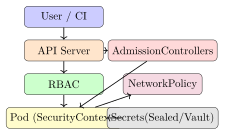

Chapter 26: Cloud-Native Security¶
Cloud-native architectures offer elastic scalability and rapid deployment but introduce distinct attack surfaces: misconfigured identity policies, exposed storage buckets, container escape paths, and insecure supply chains. Security engineering in the cloud requires understanding the shared responsibility model, identity architecture, container and orchestration hardening, and supply chain integrity.
26.1 The Shared Responsibility Model¶
Definition 26.1 (Shared Responsibility Model)
In cloud computing, the shared responsibility model delineates which security obligations rest with the cloud service provider (CSP) and which remain with the customer, depending on the service model.
| Control Area | IaaS | PaaS | SaaS |
|---|---|---|---|
| Physical data centre | CSP | CSP | CSP |
| Hypervisor / network | CSP | CSP | CSP |
| Operating system | Customer | CSP | CSP |
| Runtime / middleware | Customer | CSP | CSP |
| Application code | Customer | Customer | CSP |
| Data classification | Customer | Customer | Customer |
| Identity & access mgmt | Customer | Customer | Customer |
Misconfiguration is the Customer’s Responsibility
Data breaches from public S3 buckets, permissive IAM policies, and exposed databases are customer-side failures. The CSP provides the tools; the customer must configure them correctly.
26.2 Cloud Identity and Access Management¶
26.2.1 AWS IAM Fundamentals¶
AWS IAM controls who (principal) can do what (action) on which resource under what conditions. Policies are expressed in JSON and attached to users, groups, roles, or resources.
{
"Version": "2012-10-17",
"Statement": [
{
"Sid": "ReadOnlyBucketAccess",
"Effect": "Allow",
"Action": [
"s3:GetObject",
"s3:ListBucket"
],
"Resource": [
"arn:aws:s3:::my-secure-bucket",
"arn:aws:s3:::my-secure-bucket/*"
]
}
]
}
- IAM Roles for EC2/Lambda
- Instance profiles attach a role to a compute resource; credentials are rotated automatically via the Instance Metadata Service (IMDSv2). Prefer roles over long-lived IAM user access keys.
- Principle of Least Privilege
- Grant only the minimum permissions required for a task. Use IAM Access Analyser and the AWS IAM Policy Simulator to verify effective permissions.
- Confused Deputy Problem
- A service with broad permissions may be tricked by a less-privileged caller into performing actions the caller could not perform directly. Mitigation: use
aws:SourceAccountandaws:SourceArncondition keys in resource-based policies.
{
"Version": "2012-10-17",
"Statement": [{
"Effect": "Deny",
"Action": "s3:PutObject",
"Resource": "*",
"Condition": {
"StringNotEquals": {
"aws:RequestedRegion": ["eu-west-1", "eu-west-2"]
}
}
}]
}
26.2.2 AWS Organizations and Service Control Policies¶
AWS Organizations lets you manage multiple AWS accounts under a single management structure called an organization. The real security power sits in Service Control Policies (SCPs)—JSON policy documents attached to an Organizational Unit (OU) or to individual accounts that act as guardrails on every principal inside that account, including the root user. SCPs don’t grant permissions on their own; they establish the maximum permissions ceiling. Even if an IAM administrator inside a member account writes a policy granting full : access, the SCP filter applies first and can deny specific actions before the IAM evaluation even runs. This makes SCPs the right tool for non-negotiable organisational controls rather than account-level IAM policies that an account administrator could later modify.
Two patterns show up in almost every enterprise AWS deployment. The first is preventing CloudTrail from being disabled: a single SCP applied at the root OU that denies cloudtrail:StopLogging, cloudtrail: DeleteTrail, and cloudtrail:UpdateTrail ensures no account—regardless of what the local IAM policies say—can silence the audit trail. The second pattern restricts IAM user creation in non-production accounts. When your organisation mandates federation through an IdP (Okta, Azure AD), long-lived IAM users are a policy violation; an SCP that denies iam:CreateUser in all accounts except the management account enforces this automatically without relying on each team to remember the rule.
{
"Version": "2012-10-17",
"Statement": [
{
"Sid": "DenyCloudTrailModification",
"Effect": "Deny",
"Action": [
"cloudtrail:StopLogging",
"cloudtrail:DeleteTrail",
"cloudtrail:UpdateTrail",
"cloudtrail:PutEventSelectors"
],
"Resource": "*"
},
{
"Sid": "DenyIAMUserCreation",
"Effect": "Deny",
"Action": "iam:CreateUser",
"Resource": "*",
"Condition": {
"StringNotEquals": {
"aws:PrincipalOrgID": ["o-exampleorgid11"]
}
}
}
]
}
One important nuance: SCPs follow an implicit deny model at the organizational boundary. If you apply a restrictive SCP that only allows specific services (an allow-list SCP), every service not listed is implicitly denied even if the local IAM policy permits it. Most enterprises use deny-list SCPs instead—they start with a FullAWSAccess policy and layer specific denies on top— because allow-list SCPs require enumerating every permitted service, which breaks as teams adopt new AWS services. Tag-based conditions work inside SCPs too, which lets you write guardrails like “deny terminating any EC2 instance tagged Environment=Production unless the request comes from the approved change-management role.”
26.3 Cloud Storage Misconfigurations¶
Capital One Breach (2019)
A misconfigured WAF EC2 instance had an over-permissive IAM role attached. An attacker exploited an SSRF vulnerability in the WAF to reach the EC2 Instance Metadata Service and retrieve the IAM role credentials. Using those credentials, the attacker exfiltrated over 100 million customer records from S3 buckets. Root cause: SSRF + overly permissive IAM role + absence of IMDSv2 enforcement.
Common cloud storage misconfigurations:
-
AWS S3:
Block Public Accessdisabled; bucket ACL set topublic-read; missing server-side encryption. -
Azure Blob: Container access level set to
BloborContainer(anonymous read). -
GCP Cloud Storage: Bucket IAM includes
allUsersorallAuthenticated UserswithStorage Object Viewer.
Detection and remediation:
# Enable managed Config rule
aws configservice put-config-rule \
--config-rule '{"ConfigRuleName":"s3-bucket-public-read-prohibited",
"Source":{"Owner":"AWS",
"SourceIdentifier":"S3_BUCKET_PUBLIC_READ_PROHIBITED"}}'
# Remediate with Auto Remediation -> AWS-DisableS3BucketPublicReadWrite
26.4 Container Security¶
Definition 26.2 (Container Security)
Container security encompasses the practices and controls applied to container images, registries, runtimes, and orchestrators to reduce the attack surface and limit the blast radius of a compromise.
# Use a minimal, pinned base image
FROM python:3.12-slim@sha256:<digest>
# Run as non-root user (principle of least privilege)
RUN useradd -r -u 1000 appuser
USER 1000
# Copy only what is needed (avoid COPY . .)
COPY --chown=1000:1000 app/ /app/
WORKDIR /app
# No secrets in ENV or build args; use runtime injection
RUN pip install --no-cache-dir -r requirements.txt
EXPOSE 8080
ENTRYPOINT ["python", "main.py"]
docker run \
--read-only \
--tmpfs /tmp \
--cap-drop ALL \
--cap-add NET_BIND_SERVICE \
--security-opt no-new-privileges \
--user 1000:1000 \
myapp:latest
26.4.1 Image Scanning¶
| Tool | Integration | Key Feature |
|---|---|---|
| Trivy | CLI, GitHub Actions, CI/CD | Fast; OS + application dependency CVE scan |
| Snyk | IDE, CI/CD, registry | Fix advice; licence compliance |
| Docker Scout | Docker Desktop, Hub | Native; real-time policy evaluation |
| Grype | CLI, Syft SBOM input | SBOM-aware; EPSS scoring |
26.4.2 OCI Image Registries and Registry Security¶
The Open Container Initiative (OCI) image format is the standard for container images, and where you pull those images from matters as much as what’s inside them. Public registries like Docker Hub are convenient but introduce several risks: Docker Hub’s rate-limiting policy (100 pulls per 6 hours for anonymous users, 200 for free accounts) drove most organisations to mirror images to private registries in 2020, and that operational decision also improved their security posture as a side effect.
Private registries—Amazon ECR, Google Artifact Registry, Azure Container Registry—give you control over who can push and pull, automatic vulnerability scanning on push, and immutable image tags enforced via tag immutability settings. ECR can block pushes if the image contains critical-severity CVEs above a threshold, acting as an admission gate before the image ever reaches a cluster.
The image pull policy in Kubernetes controls whether the node checks the registry for a fresh copy or uses a locally cached version. IfNotPresent (the default) reuses a cached layer if the tag already exists locally—which means a pod restarted after a security patch might silently continue using the old, vulnerable image if the tag (e.g., latest) hasn’t changed. Setting the pull policy to Always forces a registry check on every pod start, but it adds latency and increases registry load. The practical recommendation: pin images to their SHA-256 digest rather than a mutable tag, and set pull policy to IfNotPresent on the pinned digest—you get determinism without the registry round-trip overhead, and a changed image simply gets a different digest and therefore a different deployment manifest.
Registry mirroring for air-gapped or restricted environments deserves its own mention. In production environments with strict egress controls, nodes can’t reach Docker Hub or even public cloud registries. A mirror (Harbor, JFrog Artifactory, or a self-hosted OCI distribution server) proxies and caches upstream images inside the network perimeter. The containerd mirrors configuration in /etc/containerd/config.toml tells the container runtime to try the internal mirror before the upstream source. This pattern also lets you enforce a policy: only images that have passed your internal scanning pipeline appear in the mirror, so nodes can only pull approved images regardless of what a developer specifies in a pod spec.
26.5 Kubernetes Security¶

26.5.1 RBAC¶
apiVersion: rbac.authorization.k8s.io/v1
kind: ClusterRole
metadata:
name: pod-reader
rules:
- apiGroups: [""]
resources: ["pods"]
verbs: ["get", "list", "watch"]
---
apiVersion: rbac.authorization.k8s.io/v1
kind: ClusterRoleBinding
metadata:
name: pod-reader-binding
subjects:
- kind: ServiceAccount
name: monitoring-sa
namespace: default
roleRef:
kind: ClusterRole
name: pod-reader
apiGroup: rbac.authorization.k8s.io
26.5.2 Pod Security Standards and SecurityContext¶
apiVersion: v1
kind: Pod
metadata:
name: secure-pod
spec:
securityContext:
runAsNonRoot: true
runAsUser: 1000
seccompProfile:
type: RuntimeDefault
containers:
- name: app
image: myapp:latest
securityContext:
allowPrivilegeEscalation: false
readOnlyRootFilesystem: true
capabilities:
drop: ["ALL"]
resources:
limits:
cpu: "500m"
memory: "256Mi"
26.5.3 Secrets Management¶
Never Store Secrets in Environment Variables or Images
Environment variables are visible in /proc/<pid>/environ and in container inspection output. Secrets baked into images persist in layer history. Use external secret stores with runtime injection instead.
Options for Kubernetes secrets management:
- Sealed Secrets (Bitnami)
- Encrypt secrets client-side with the cluster public key; store encrypted
SealedSecretCRD in Git. - External Secrets Operator
- Sync from AWS Secrets Manager, Azure Key Vault, or HashiCorp Vault into Kubernetes Secrets at runtime.
- HashiCorp Vault Agent Injector
- Sidecar injects secrets as files into the pod filesystem; short-lived dynamic secrets per service.
26.5.4 Admission Controllers¶
Every object creation or modification request to the Kubernetes API server passes through the admission control pipeline after authentication and authorisation. Admission controllers are the last line of defence before a resource lands in etcd. Kubernetes ships several built-in controllers (LimitRanger, ResourceQuota, PodSecurity), but the most powerful extension points are the webhook-based controllers: ValidatingWebhookConfiguration and MutatingWebhookConfiguration.
A mutating webhook runs first and can modify the incoming object—injecting a sidecar container, adding default resource limits, or rewriting an image tag to a digest. A validating webhook runs after mutation and can only approve or reject; it can’t change the object. Both call an external HTTPS service that receives a JSON AdmissionReview object and returns an allow/deny decision with an optional patch (for mutating).
OPA Gatekeeper implements policy-as-code for Kubernetes. It registers itself as a validating webhook and uses two Kubernetes Custom Resource Definitions (CRDs): ConstraintTemplate (defines the Rego policy logic and the shape of the constraint) and Constraint (instantiates the template with specific parameters, e.g., which namespaces to enforce). Rego is a declarative query language—you express what must be true for a request to be allowed, not a sequence of imperative checks.
Kyverno takes a different approach: policies are expressed as Kubernetes YAML resources rather than a separate policy language. A Kyverno ClusterPolicy uses a validate/mutate/generate structure that reads like a Kubernetes manifest, making it more approachable for teams that aren’t comfortable writing Rego. The trade-off is expressiveness: Rego can express complex logic that would be verbose or impossible in Kyverno’s YAML DSL, but most common policies—require labels, enforce resource limits, disallow latest tags—are simpler in Kyverno.
The canonical example that every admission controller tutorial covers is blocking pods without resource limits. Without CPU and memory limits, a single misbehaving pod can starve other workloads on the node (the “noisy neighbour” problem), and in a security context, unlimited memory grants a compromised container unlimited headroom for its payload.
# ConstraintTemplate defines the Rego policy
apiVersion: templates.gatekeeper.sh/v1
kind: ConstraintTemplate
metadata:
name: requireresourcelimits
spec:
crd:
spec:
names:
kind: RequireResourceLimits
targets:
- target: admission.k8s.gatekeeper.sh
rego: |
package requireresourcelimits
violation[{"msg": msg}] {
container := input.review.object.spec.containers[_]
not container.resources.limits.cpu
msg := sprintf("Container '
[container.name])
}
violation[{"msg": msg}] {
container := input.review.object.spec.containers[_]
not container.resources.limits.memory
msg := sprintf("Container '
[container.name])
}
---
# Constraint enforces the template in the default namespace
apiVersion: constraints.gatekeeper.sh/v1beta1
kind: RequireResourceLimits
metadata:
name: require-resource-limits
spec:
match:
kinds:
- apiGroups: [""]
kinds: ["Pod"]
namespaces: ["default", "production"]
apiVersion: kyverno.io/v1
kind: ClusterPolicy
metadata:
name: require-resource-limits
spec:
validationFailureAction: Enforce
rules:
- name: check-container-limits
match:
any:
- resources:
kinds: [Pod]
validate:
message: "CPU and memory limits are required for all containers."
pattern:
spec:
containers:
- resources:
limits:
cpu: "?*"
memory: "?*"
The practical difference between Gatekeeper and Kyverno shows up in your team’s skill set. If your platform team already writes Rego for other OPA policies (e.g., in Terraform Sentinel or Conftest), Gatekeeper is a natural fit. If they’re primarily Kubernetes operators who think in YAML, Kyverno has a shallower learning curve and ships with a library of ready-made policies for common controls.
26.6 Supply Chain Security¶
- SLSA (Supply-chain Levels for Software Artefacts)
- A Google-originated framework with four levels of build provenance guarantees (L1: signed provenance; L4: hermetic, isolated build).
- SBOM (Software Bill of Materials)
- A machine-readable inventory of components and their versions. Standard formats: CycloneDX (OWASP) and SPDX (Linux Foundation). Required by US Executive Order 14028.
- sigstore / cosign
- Keyless container image signing using ephemeral keys and certificate transparency log (Rekor). Verify:
cosign verify <image>. - in-toto
- Framework for supply chain layout attestation: each step (build, test, sign) is attested by the appropriate functionary.
# Generate CycloneDX SBOM with Syft
syft myapp:latest -o cyclonedx-json > sbom.json
# Sign image with cosign (keyless, OIDC-based)
cosign sign myregistry.io/myapp:latest
# Verify signature
cosign verify \
--certificate-identity-regexp=".*@myorg.com" \
--certificate-oidc-issuer="https://accounts.google.com" \
myregistry.io/myapp:latest
26.6.1 SBOM in Practice¶
An SBOM without a vulnerability database behind it is just a list. The value of an SBOM comes from feeding it into a continuous vulnerability correlation pipeline, and that pipeline has several stages that are easy to describe but require tooling discipline to execute consistently.
The standard pipeline looks like this: generate the SBOM at build time (Syft from a container image or source tree produces CycloneDX JSON or SPDX), scan that SBOM against a CVE database (Grype consumes Syft SBOMs natively; Trivy does the same), then triage findings by reachability analysis. Reachability is the key step that most teams skip. A dependency on log4j-core 2.14.1 will light up scanners, but if your application calls no code path that uses the JNDI lookup feature, the CVE isn’t exploitable in that build. Tools like Endor Labs and Semgrep’s reachability analysis attempt to determine whether the vulnerable function is actually called from application code. This cuts the actionable findings from hundreds to tens.
The remaining fixable vulnerabilities—where a patched version exists, reachability confirmed—feed into ticket creation (JIRA, GitHub Issues) with SLA targets based on CVSS severity and your organisation’s risk appetite. Tracking over time matters: a vulnerability database growing without tickets being closed is a programme health problem, not a tooling problem.
VEX (Vulnerability Exploitability eXchange) is a companion format to SBOMs, defined by CISA and implemented in CycloneDX and OpenVEX. A VEX document is a machine-readable assertion from the component supplier or integrator that a known CVE—present in a dependency’s SBOM—is not exploitable in the built artefact, with a reason code: not_affected, not_applicable (the vulnerable component isn’t included in the build), fixed, or in_triage. VEX lets a scanner like Grype filter out CVEs that the producer has already assessed and declared non-exploitable, reducing the noise that drives analyst fatigue. US Executive Order 14028 and NTIA guidance explicitly reference VEX as part of a complete SBOM ecosystem.
# Generate SBOM from container image (CycloneDX format)
syft myapp:1.4.2 -o cyclonedx-json > sbom-myapp-1.4.2.json
# Scan SBOM for vulnerabilities; output table sorted by severity
grype sbom:sbom-myapp-1.4.2.json \
--only-fixed \
--fail-on high
# Apply VEX document to suppress assessed-non-exploitable CVEs
grype sbom:sbom-myapp-1.4.2.json \
--vex vex-myapp-1.4.2.openvex.json
# Track results over time: push to a vulnerability tracker
grype sbom:sbom-myapp-1.4.2.json \
-o json | jq '.matches[] | {id:.vulnerability.id,
severity:.vulnerability.severity,
pkg:.artifact.name}' \
>> vuln-tracking.jsonl
26.7 Cloud Threat Detection¶
| CSP Tool | Data Source | Finding Categories |
|---|---|---|
| AWS GuardDuty | CloudTrail, VPC Flow, DNS | Reconnaissance, UnauthorizedAccess, CryptoCurrency, Backdoor |
| Azure Defender | Activity Log, Entra SignIn | Impossible travel, mass data transfer, Mimikatz execution |
| GCP SCC | Cloud Audit, Flow logs | Anomalous IAM grant, exposure, malware |
-- Athena query on CloudTrail logs stored in S3
SELECT userIdentity.arn, eventName, requestParameters,
sourceIPAddress, eventTime
FROM cloudtrail_logs
WHERE eventName IN (
'AttachUserPolicy','AttachRolePolicy','CreateLoginProfile',
'UpdateLoginProfile','AddUserToGroup','CreateAccessKey'
)
AND userIdentity.type != 'Root'
ORDER BY eventTime DESC
LIMIT 100;
26.7.1 Falco for Runtime Security¶
GuardDuty, Defender for Cloud, and SCC are excellent at correlating cloud API events, but they don’t see what happens inside a running container at the syscall level. That’s where Falco fills the gap.
Falco is a CNCF open-source runtime security project. Its sensor intercepts Linux system calls using either a kernel module or an eBPF (extended Berkeley Packet Filter) probe attached to the kernel’s tracepoints. eBPF is the preferred deployment mode in modern Kubernetes clusters because it doesn’t require a kernel module signed for the host OS, it runs in a sandboxed VM inside the kernel, and it carries less risk of crashing the node than a traditional kernel module.
Rules are written in YAML and pattern-match against the stream of syscall events enriched with container and Kubernetes metadata (container name, namespace, pod name, image digest). A rule specifies a condition (a Falco filter expression) and a output message template. The detection engine evaluates every syscall against all active rules with negligible overhead because the filtering logic runs inside the eBPF program, in kernel space, before the event even reaches user space.
The classic example rule—one that ships in Falco’s default rule set—is detecting a shell spawned inside a container. Legitimate application containers don’t need an interactive shell; if /bin/sh or /bin/bash starts inside a container whose parent process is not another shell, that’s a strong signal of post-exploitation activity (an attacker who achieved code execution and dropped to a shell for interactive reconnaissance).
- rule: Shell Spawned in Container
desc: >
A shell was spawned in a container. This is often indicative of an
attacker gaining interactive access after initial code execution.
condition: >
spawned_process
and container
and shell_procs
and not proc.pname in (shell_binaries)
and not container.image.repository in (known_shell_spawning_images)
output: >
Shell spawned in container
(user=
container_id=
image=
shell=
k8s_ns=
priority: WARNING
tags: [container, shell, attack, T1059]
An important characteristic of Falco’s design: it’s a detection-only tool. It generates alerts; it doesn’t block syscalls. Blocking at the syscall level requires a different technology (seccomp profiles, which deny specific syscalls at the kernel scheduler before they execute). Falco’s role is to fire an alert when a runtime rule matches; the response mechanism is a separate layer. In practice, teams wire Falco alerts to a response function—an AWS Lambda or Google Cloud Function triggered by the alert—that takes automated action: isolating the pod (removing it from the service’s selector labels so it receives no new traffic), capturing a memory dump for forensic analysis, or opening a PagerDuty incident. Some teams connect Falco to Falcosidekick, a fan-out service that routes alerts to Slack, Elasticsearch, S3, and a response function simultaneously.
# Example Lambda handler (Python): isolate pod on Falco shell alert
import boto3, json, subprocess
def handler(event, context):
alert = json.loads(event['body'])
if alert['rule'] != 'Shell Spawned in Container':
return
pod_name = alert['output_fields']['k8s.pod.name']
namespace = alert['output_fields']['k8s.ns.name']
# Remove pod from service selection by removing app label
subprocess.run([
'kubectl', 'label', 'pod', pod_name,
'-n', namespace,
'app-', '--overwrite' # removes the 'app' label
], check=True)
# Optionally cordon the node to prevent new scheduling
node = alert['output_fields'].get('k8s.node.name', '')
if node:
subprocess.run(['kubectl', 'cordon', node], check=True)
print(f"Isolated pod {pod_name} in {namespace}")
Falco’s rule library covers a wide threat surface out of the box: writing to /etc, /usr, or /bin from inside a container; outbound connections to unexpected IP ranges; ptrace calls that suggest container escape attempts; and loading kernel modules from user space. Custom rules are easy to add and should target your specific application baseline—if your web app container never makes outbound DNS queries except to the cluster DNS resolver, a rule alerting on any other DNS destination catches unusual C2 communication with low false positives.
26.8 Container Security Controls Checklist¶
| Control | Tool/Config | Status |
|---|---|---|
| Non-root container user | USER 1000 in Dockerfile |
✓ |
| Pinned base image digest | FROM img@sha256:... |
✓ |
| Read-only root filesystem | readOnlyRootFilesystem |
✓ |
| Drop all Linux capabilities | --cap-drop ALL |
✓ |
| No privileged containers | privileged: false |
✓ |
| Image vulnerability scanning | Trivy / Snyk in CI | ✓ |
| Pod Security Standard: restricted | Namespace label | ✓ |
| NetworkPolicy: deny-all default | Explicit ingress/egress rules | ✓ |
| Secrets from external store | Vault / ESO | ✓ |
| SBOM generation and signing | Syft + cosign | ✓ |
| Resource limits defined | resources.limits |
✓ |
| Admission controller (OPA) | Gatekeeper ConstraintTemplate | ✓ |
Exercises¶
Exercise 26.1
Review the following IAM policy and identify all violations of the principle of least privilege. Rewrite a corrected policy for a Lambda function that only needs to write log events to a specific CloudWatch Log Group and read a single SSM Parameter Store path.
{"Statement":[{"Effect":"Allow","Action":"*","Resource":"*"}]}
Exercise 26.2
Describe the sequence of events that led to the Capital One breach. Which AWS service configurations would have prevented each stage: (a) the SSRF exploitation, (b) the credential retrieval from IMDS, (c) the S3 exfiltration?
Exercise 26.3
Design a container security pipeline for a microservices application deployed on Kubernetes. Include: (a) Dockerfile best practices, (b) CI/CD image scanning with policy gates, (c) SBOM generation and signing, (d) Kubernetes RBAC and Pod Security Standard configuration, and (e) runtime threat detection. Specify which tool you would use at each stage and the criteria for blocking a deployment.